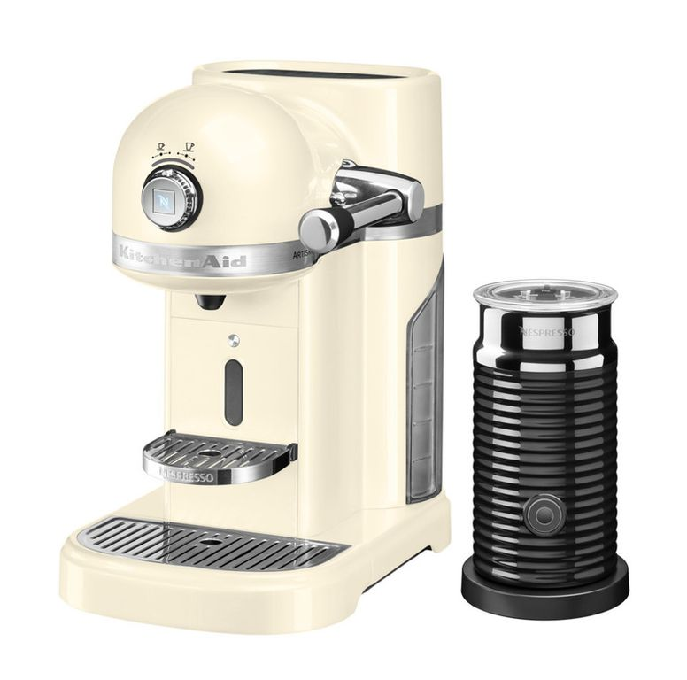

Капсульная кофеварка BORK C830 VS KitchenAid 5KES0504
Современная техника отличается от ретро тем, что экономит самое ценное на сегодняшний день – время. Ретро дизайн - это на любителя, а вот ретро технологии это вчерашний, а быть может и позавчерашний день.
KitchenAid 5KES0504
Преимущества KitchenAid, которые пытаются продать:
- Дизайн и выбор цветов
- Страна производства Венгрия
- Компания, которая изобрела миксеры в 1919 году
- KitchenAid переводится, как кухонный помощник
- Цельнометаллический корпус
Характеристики KitchenAid:
- Потребляемая мощность: 1160 Вт
- Объём резервуара для воды: 1.4 л
- Количество настроек кофе: 6 настроек 25-130 мл.
- Давление: 19 Бар
- Тип управления: шатл, кнопка
- Молочное решение: Aeroccino 3
- Время прогрева: 25 сек
Преимущества кофемашины BORK Creatista C830:
- Современный тип управления (цветной, информативный дисплей, электронный шатл, русскоязычное меню) обеспечат комфорт при пользовании и обслуживании кофемашины
- Наличие 8 автоматических рецептов с пошаговым гидом приготовления, гарантируют идеальный результат
- Возможность сохранения в памяти персональных рецептов напитков удовлетворит самый взыскательный запрос
- Уникальный SMART – капучинатор благодаря 8 уровням настройки текстуры и 11 настройкам температуры молока, позволит автоматически взбить молоко для любого напитка, от легкого кофе-латте, до капучино (у KitchenAid в комплекте Aeroccino 3 с двумя видами взбивания – теплое/холодное)
- Широкий диапазон настроек объёма черного кофе (25 - 150 мл) позволит раскрыть все многообразие вкусов напитка
- Нет необходимости долго ждать, высокая мощность (1600 Вт) и инновационный нагревательный элемент сокращают время готовности к работе кофемашины до 3 сек (у KitchenAid – 25 сек)
- Более лёгкое обслуживание: индикация необходимости очистки от накипи, кофейных масел с пошаговый гидом (у KitchenAid есть только рекомендация обслуживать 1 раз в месяц)
- Реальная цена отличного продукта
Покупая KitchenAid, вы покупаете не только ретро дизайн, но и ретро технологии.